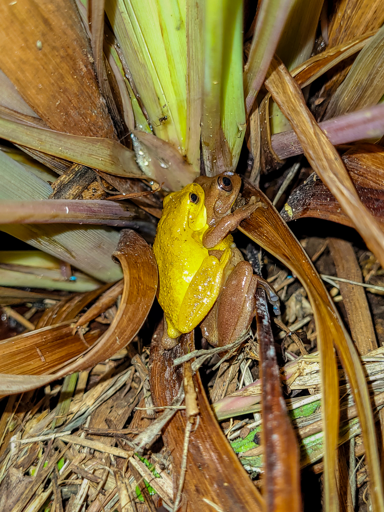
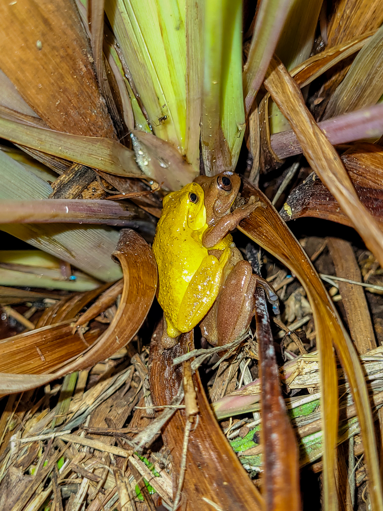

Colecciones vividas
La vegetación del área de estudio se referencia dentro de la zona de vida de selva Subandina (Cuatrecasas, 1958). Dentro de la conservación
in situ y ex situ, el Jardín Botánico presenta dentro de su área 5 colecciones vivas establecidas: Jardín Arboretum, Epifitario,
Bambusetum, Heliconario y Bosque natural. Las colecciones cuentan con un sendero de 1.050 metros demarcado con distintos tipos de
sustrato en cada una de ellas, incluyendo 176 metros de la zona de transición entre Heliconario y bosque natural que es un área de cultivo de café.
Se han determinado en las distintas colecciones del JBP, más de 58 familias botánicas, entre las que sobresalen Araceae, Asteraceae,
Bromeliaceae, Lauraceae, Moraceae, Melastomataceae, Orquidaceae, Poaceae y Rubiaceae, de las cuales hay identificadas aproximadamente
70 a nivel de género y más de 100 a nivel de especie, distribuidas en los estratos epífito, trepador rasante, herbáceo, arbustivo y arbóreo.
En dicha estratificación, se observa vegetación asociada como epifitas vasculares como orquídeas, bromelias, helechos, bejucos y lianas y no
vasculares con los grupos de briófitos que registran un total de 45 especies, además, de macrohongos con 136 especies y líquenes con 63 especies inventariadas.
JARDIN ARBORETUM
Colección de importancia ecológica, económica, ornamental e histórica, incluyendo la zona de ampliación,
presenta un área de 6695,8 m2, con 471 individuos representados en 32 familias, 49 géneros y 55 especies, de las cuales 35 son nativas,
15 cultivadas, 4 introducidas y 1 endémica, como son: Retrophyllum rospigliosii (Pino Romerón), Liquidambar styraciflua (Álamo o estoraque),
Nectandra sp. (Jigua), Quercus humboldtii (Roble), Alnus jorullensis (Aliso), Juglans neotrópica (Cedro negro), Senna spectabilis (Flor amarillo),
Erythrina edulis (Chachafruto), Erythrina fusca (Cachimbo), Acacia melanoxylon (Acacia negra), Calliandra sp. (Carbonero matizado),
Albizia guachapele (Igua), Ochroma pyramidale (Balso tambor), Myrcia popayanensis (Arrayán), Lafoensia acuminata (Guayacán maderable),
Cedrela odorata (Cedro oloroso), Billia rosea (Cariseco), Sapindus saponaria (Jaboncillo), Cestrum sp. (Jazmín de monte), Ixora sp. (Coralito),
Cordia alliodora (Nogal cafetero), Handroanthus chrysanthus (Guayacán amarillo), Jacaranda caucana (Gualanday), Bambusa vulgaris (Bambú amarillo),
Guadua angustifolia (Guadua), Syagrus sancona. (Palma zancona) Alberga igualmente, especies amenazadas como Palma de cera (Ceroxylon quindiuense),
Cedro negro (Juglans neotropica), Molinillo (Magnolia hernandezii) y Roble andino (Quercus humboldtii), las tres primeras en categoría de En Peligro (EN) y
la última Vulnerable (VU). La colección cuenta con un sendero demarcado de 220 metros.
EPIFITARIO
Colección de importancia ecológica, que brinda refugio a especies de epífitas vasculares y no vasculares de región principalmente.
Con la donación de la Asociación Payanesa de Orquideología – APO de 177 plantas en 2014, que enriqueció la colección.
Contamosc con 428 individuos distribuidos en 62 morfo especies, 45 géneros, 4 familias entre Orquidaceae, Bromeliaceae,
Polypodaceae (Pterodófitos) y Cactaceae, de los cuales 409 individuos corresponden a orquídeas, 12 a bromelias, 6 helechos, 1 cactus y 14 indeterminadas.
Alberga especies amenazadas de orquídeas como la Cattleya trianae, considerada la Flor Nacional de Colombia, además, de Cattleya quadricolor, Cattleya
mendelii y Cattleya warscewiczii, las tres primeras en categoría de En Peligro (EN) y la última Vulnerable (VU).
BAMBUSETUM
Colección que cuenta con dos especies, Guadua (Guadua angustifolia) y Bambú (Bambusa vulgaris), de importancia económica, ornamental y ecológica. Además,
de hábitat de quirópteros, ofidios y protectora de fuentes hídricas. El sendero que lo recorre presenta una longitud de 35 metros, que viene de la colección de Jardín Arboretum.
HELICONARIO
Se encuentran especies de Heliconias representativas de la región y especies obtenidas por intercambio con otros Jardines Botánicos y el sendero
que lo recorre es de 31 metros de longitud.
BOSQUE NATURAL
Corresponde a un dominio de importancia capital para el Jardín Botánico, por cuanto se convierten su estrategia de conservación in situ, la cual es especial en el contexto de las colecciones nacionales.
Presenta un registro de 57 especies agrupadas en 43 géneros y 32 familias, el acceso a esta colección, es por medio de un sendero ecológico, donde se pueden identificar las características de la vegetación,
especies importantes y el paisaje de la zona.
Están representadas por pequeños parches de bosque secundario en regeneración, pertenecientes a la zona de vida de Selva Subandina, en los sectores de la quebrada Renacer, donde,
actualmente el único sendero habilitado (588 metros), para actividades de guianza y turismo es el de la quebrada renacer, que alberga 37 especies de plantas leñosas,
principalmente representadas por Palicourea thyrsiflora (Cafetillo) y Alchornea coelophylla (Lombricero).
Así mismo, se encuentra el bosque asociado a la quebrada Corazones, que nace en el centro del Campus Universitario en una zona caracterizada por la plantación de Guadua angustifolia
(Guadua) y se conforma por un parche de bosque denso altamente conservado, que alberga cerca de 33 especies de plantas leñosas y con alta abundancia de dos árboles de
Palicourea calidicola y Palicourea thyrsiflora (Cafetillo). Además, de ser rico en plantas epífitas vasculares y no vasculares, esta área se destina para procesos de
conservación e investigación.
Finalmente, el bosque de la quebrada Mano de Oso, con cerca de 44 especies de plantas leñosas, representadas principalmente por su abundancia de Palicourea thyrsiflora (Cafetillo),
Meriania speciosa (Flor de Mayo) y una alta presencia de la planta Oreopanax floribundum (Mano de Oso) a la que debe su nombre y es de uso investigativo y de conservación.
FAUNA
En las distintas colecciones vivas del Jardín Botánico de Popayán, se encuentra asociado un gran número de especies de fauna, tanto vertebrados como cordados y son de gran importancia para las dinámicas
ecológicas que presenta el ecosistema. En cuanto a la fauna asociada al Jardín Botánico se reportan:
Aves:
Encontramos especies como Barranquero Momotus aequatorialis, Cerrajas (Cyanocorax yncas), tángaras (Thraupidae sp), azulejos (Thraupis episcopus), Gorriones (Zonotrichia capensis), Toriadores (Tyranidae sp), Carpinteros (Melanerpes formicivorus), Halcón Cernícalo (Falco sparverius), Garrapatero (Milvago chimachima) y Pájaro Ardilla (Piaya cayana).
Mamíferos
Encontramos mamíferos con 5 especies como: zarigüeya (Didelphis marsupialis), zorro perro (Cerdocyon thous), tigrillo (Leopardus tigrinus), venado de cola blanca (Mazama sp.) y conejo silvestre (Oryctolagus sp). Igualmente, avistamientos continuos de otras especies como ardillas
(Sciurus vulgaris), comadreja de cola larga (Mustela frenata), y ratones de campo (Apodemus sylvaticus).
Además, de la presencia de 13 especies de quirópteros pertenecientes a las familias Vespertilionidae, Molossidae y Phyllostomidae. Por otro lado, esta última familia comprende 8 especies distribuidas en tres Subfamilias Carrollinae con las especies Carollia brevicauda y Carrollia perspecillata, Stenodermatinae con las especies Artibeus lituratus, Artibeus jamaicensis,
Artibeus phaeotis, Platyrrhinus chocoensis y Vampyressa melissa y la Subfamilia Phyllostominae con la especie Phyllostomus discolor.
Reptiles
Los herpetos, en anfibios se registran 9 especies, entre ellas, Pristimantis taeniatus (cf), Pristimantis leoni (cf),
Pristimantis w-nigrum (cf), Colostethus fraterdanieli y una especie identificada por su canto Dendropsophus colombianus. Por su parte, en reptiles hay presencia 6
especies de serpientes, como, falsa coral (Lampropeltis triangulum), jueteadora (Chironius monticola), coral (Micrurus sp.), rabo de ají (Micrurus mipartitus),
culebra huertera (Sibon nebulata) y Sabanera (Atractus sp.) y dos especies de lagartijas Anolis auratus y Pholidobolus vertebralis.
Insectos
Otros grupos como, insectos pertenecientes a los Órdenes Lepidoptera (mariposas, polillas), se han registrado 64 especies de Lepidópteros
diurnos, 29 especies del Orden Himenoptera, como las hormigas (Fam. Formicidae), 12
especies de escarabajos coprófagos (Coleoptera: Scarabaeinae) y algunos sin inventario pertenecientes al Orden Orthoptera (saltamontes, grillos).

 



{kind=link}
{kind=link}